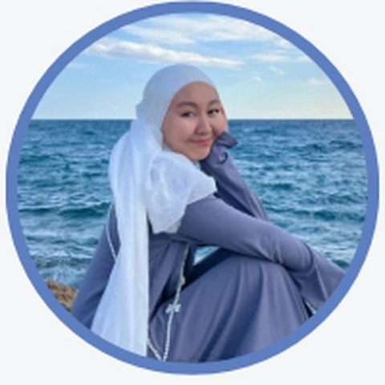

🇺🇸 English
Ағылшын тілі
Ересектерге · жеке120 000 ₸
Оқушыларға · жеке80 000 ₸
Ересектерге · жұптық96 000 ₸
Оқушыларға · жұптық64 000 ₸
Ағылшын және түрік тілдерінен жеке және жұптық онлайн сабақтар. Сабақта көп сөйлейтін — оқушы. Негізгі басымдық - Speaking, сөйлеу қабілетін дамытамыз.
10 жылдан астам тәжірибесі бар дипломды шет тілдері оқытушысымен сабақтар. Негізгі мақсат — Speaking дағдысын дамытып, тілді еркін қолдану.
Сабақтың басым бөлігінде мұғалім емес, оқушы сөйлейді: сұрақтарға жауап береді, диалог құрады, өмірлік жағдайларды талқылайды.
Тапсырмалар оқушының деңгейіне, мақсатына және қажеттілігіне қарай бейімделеді.
Оқу материалдары, сөздік жаттығулары, сөйлеу тапсырмалары және ойын элементтері қолданылады.
Қателермен жұмыс істеп, сөйлеу дағдысын дамытуға арналған нақты ұсыныстар беріледі.
Бағалар 8 онлайн сабақтан тұратын пакетке көрсетілген.
Сабақтың басым бөлігінде оқушы үйреніп жатқан тілінде сөйлейді.
Өткен сабақты кез келген уақытта қайта қарап, қайталауға болады.
Үй тапсырмалары, оқу материалдары, сөздік жаттығулары мен ойындар.
Оқушының деңгейіне, мақсатына және қажеттілігіне қарай бейімделеді.
Қателермен жұмыс және сөйлеу дағдысын жақсартуға арналған ұсыныстар.

Шет тілдері мұғалімі · Тіл коучі
🎓 Білімім: «Екі шет тілі» мамандығы бойынша магистрмін. Ғылыми зерттеуімді шет тілдерін оқытудағы лингвокоучинг әдісіне арнадым. 10 жылдан астам тәжірибем бар. 🌍 Халықаралық тәжірибем: АҚШ, Польша, Біріккен Араб Әмірліктері және Түркия елдерінде тұрып, әртүрлі тілдік және мәдени ортада тәжірибе жинақтадым. 🗣️ Тілдік тәжірибем: Қазақ, орыс, ағылшын және түрік тілдерін меңгергенмін. Қазіргі таңда оқытушымен араб тілін және жеке испан тілін үйреніп жүрмін. Сондықтан тіл үйренушінің қандай қиындықтарға тап болатынын жақсы түсінемін.
Бағдарлама туралы сұрақтарыңыз болса, Instagram арқылы хабарласыңыз.
@aldana.palman · Instagram ↗